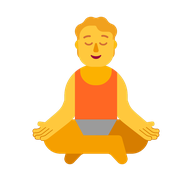

Back Reset
Calm the alarm · keep moving
Keeps the screen on while you stretch.
0
Get ready
Nicely done
iPhone: iOS pauses web pages when the screen locks, so the beeps stop. Turn on Keep screen on in Timings below. iPhone: the screen stays on while the timer runs, as the beeps stop if it locks. Best on charge.
Ready
25:00
Timings
Ph 1 = Back Release · Ph 2 = Hips & Mid-Back · Desk = minutes stood / sat / moved